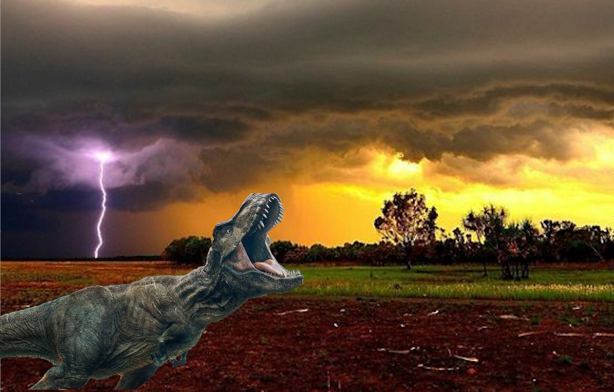

The amazing T-Rex

The dinosaurs were very cool, and they were a little bit mysteryious creatures that lived at least 248 million years ago. there where herbvores carnivores and omnivores, Herbivores ate plants so they have teeth that are meant for grinding plants which means that the are flat on the top with little ridges on the top too. A carnivore is a animal that has teeth that are very sharp and serrated on the sides which are meant for ripping up meat from their prey. A omnivore is a animal like us that eat plants and meat so they have both types of teeth. There were differnt time periods that dinosaurs lived in there was the Mesozoic Era, The Triassic period, The Jurassic period then the Cretaceous period. The dinosaur that we are talking about, the Tyranousaurous Rex, lived in the late cretaceous period so about 65 million yeas ago.
The T-Rex lived on earth during the late cretaceous period. It would only live for about 30 years so not very long. It's habitat was pretty warm and he would live around where his prey or the Dinosaurs that he likes to eat roam around and it would make it easier to hunt becasue they were in the same area as him.
The T-Rex was a carnivore which means it likes to eat meat. The T-Rex would eat what ever it wanted. Some of the dinosaurs that were on his menu were the Triceratops, the Santanaraptor, the Corythosaurus, the Edmontosaurus and suprisingly each other. One of the most commmon dinosaurs that the T-rex liked to eat was the Triceratops, that is the most common Dinosaur that most people say.
The T-REX did not just disappear almost all of the dinosaurs did when a giant meteor colided with the earth and it caused a mass extinction of the Dinosaurs, and that was the end of the cretaceous period. The only animals that survived the extingtion were the birds and some reptiles and mamals that evolved to the birds and reptiles we know today. The reason why most of the Dinosaurs besides the birds and some reptiles went extinct becasue all of the smoke from the wild fires blocked out the sun and caused the plants and trees to die becasue they need the sun to live, Since the plants died that means that the Dinosaurs that ate the plants (or herbvores) had nothing to eat so they died. This means that the carnivores (dinosaurs that eat meat) have nothing to to eat becasue all of their prey died, They ate other carnivores to but they died becasue all of the other carnivores were either eaten or were already dead. The animals that survived, like mamals, lived under ground. Animals like birds lived in a place where the effect from the meteor was a lot less bad, for Reptiles like Crocdiles would live under water because their natural habitat was under water.

The Tyranosaurous Rex, (or in other words the T-Rex ) has teeth the size of bananas. The T-Rex has has a life span for a bout 30 years. Tyranosaurous is the greek word for tyrant lizard. The T-Rex is measured up to 43 feet long and weighed up to 7.5 tons!